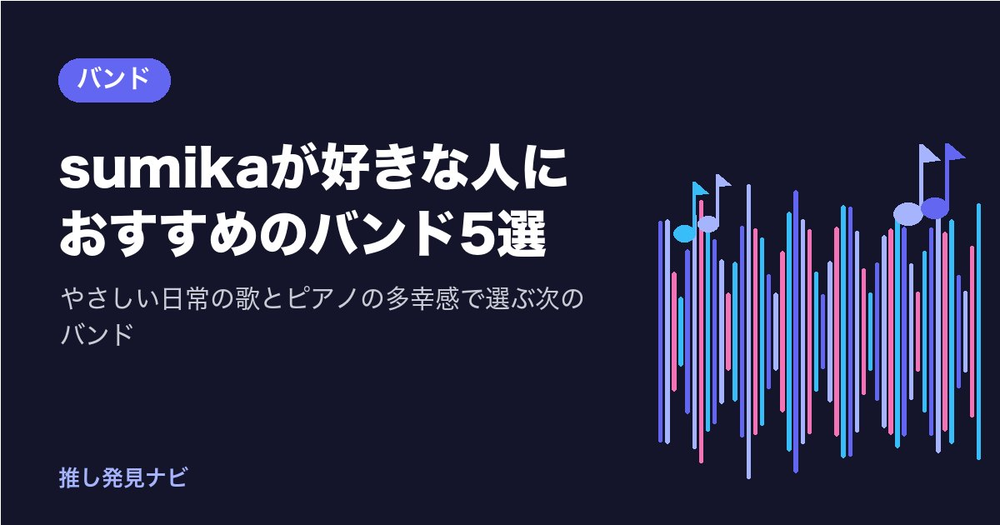

sumikaが好きな人におすすめのバンド4選｜やさしい日常の歌とピアノの多幸感で選ぶ次のバンド
※この記事はプロモーション（広告）を含みます

「Lovers」や「ファンファーレ」を聴いて、聴き終わったあとに、少しだけ心があたたまっているのを感じたことはありませんか。
この記事を読むと、sumikaの好きなところを4つに分けて、次に聴きたいバンドを4組の中から選べます。
結論を先に言うと、多幸感ならMrs. GREEN APPLE、一緒に歌える熱さならNovelbright、世代を越えて歌い継がれるみんなの歌ならMONGOL800、時代を越える温かさならサザンオールスターズです。
川崎で結成して、アニメの主題歌で広がったsumikaの歩みを短くたどってから、4組を共通点と違いで紹介します。
sumikaの魅力をおさらい
sumikaは、神奈川県川崎市で2013年5月に結成されたポップロックバンドです。同じ時に、アコースティック編成の「sumika[camp session]」も始動しました。バンド名は、「多くの人の『住処』になってほしい」という思いが由来です。
2017年に「Lovers」がヒットし、2018年にはアニメ『ヲタクに恋は難しい』のオープニング「フィクション」、アニメ映画『君の膵臓をたべたい』の主題歌「ファンファーレ」「春夏秋冬」で、広く知られるようになりました。2023年には結成10周年の記念ライブを横浜スタジアムで開き、2025年3月には5thアルバム『Vermillion's』を発表。2026年は春夏のツアー「Unique」を日本武道館2DAYSで終え、9月から12月にかけて、Zeppを回る「Flügel Letter」を行っています。
| sumikaの魅力 | 具体的には |
|---|---|
| 日常の小さな幸せを歌う | 家族・恋人・仲間との関係を、悲しみも含めて肯定する視線 |
| ピアノ・キーボードが軸 | ブラスやハンドクラップ、コーラスを重ねた、カラフルな編曲 |
| 一緒に歌えるサビ | 擬音や呼びかけを置いて、聴く人が声を出せる平易さ |
| 語りかけるような歌声 | 片岡健太の温かい声と、ライブでの誠実なMC |
こんな声をよく聞きます。「sumikaは、落ち込んでいるときにも、聴くとなぜか前を向ける。同じ温度のバンドをもっと知りたい」。
あなたがsumikaのどこに惹かれたかで、次に聴く1組が変わります。4組を順番に見ていきましょう。
多幸感のあるポップロックが好きな人へ｜Mrs. GREEN APPLE
Mrs. GREEN APPLE（ミセス）は、2013年に東京で、高校生だった大森元貴らが結成したバンドです。2015年にメジャーデビューし、2020年にいったん活動を休止しました。2022年から、大森元貴・若井滉斗・藤澤涼架の3人で再始動し、「ケセラセラ」「ライラック」で日本レコード大賞を2年連続で受賞しました。
sumikaとの共通点は、アニメやドラマ、映画の主題歌で広がったこと、キーボードの音色がサウンドの要になっていること、そして、聴く人の背中を押す明るさです。「ダンスホール」や「Soranji」のように、サビが大きく開ける曲は、sumikaの多幸感のある曲が好きな方に届きやすいはずです。
違いは、表現の幅です。sumikaが、日常に寄り添う素直な言葉で一貫するのに対し、ミセスは、大森元貴の作る曲が、曲ごとに色を大きく変えます。ポップな曲の隣に、陰影の濃い曲や、物語のように展開する曲が並ぶ点が、ミセスならではです。
2026年は「フェーズ3」に入り、9月30日に6thアルバム『POPS』を発売。約3年ぶりの全国アリーナツアー「Ringo Jam Tour "SHADOWS"」を行っています。
「青と夏」「ダンスホール」「ライラック」から聴いてみてください。
一緒に歌える熱さが好きな人へ｜Novelbright
Novelbrightは、大阪府出身の5人組ロックバンドです。2013年に結成され、2019年の「どチクショー路上ライブ TOUR」の映像がSNSで広まって注目されました。2020年に、「Sunny drop」でユニバーサル ミュージックからメジャーデビューしています。「Walking with you」「ツキミソウ」「愛とか恋とか」などで、国内外の総ストリーミング再生は20億回を超えています。
sumikaとの共通点は、サビで一緒に歌いたくなる、ひらけた曲が多いことです。ライブで客席と一体になる様子や、聴く人を前向きにしてくれる歌詞も、よく似ています。
違いは、歌声の力強さです。sumikaが語りかけるように歌うのに対し、竹中雄大のボーカルは、高音を張り上げる、まっすぐな力強さが持ち味です。ギターの音も前に出ていて、熱量でぐいぐい引っ張る、ロックバンドらしい曲が並びます。
2025年には初のアリーナツアー「Winding Road」を、全公演ソールドアウトで終えました。2026年は、4月1日に4thアルバム『PYRAMID』を発売し、全国ツアーを大阪城ホールで終えたあと、10月に台北公演を行っています。
「Walking with you」「ツキミソウ」「愛とか恋とか」から聴いてみてください。
世代を越えて、みんなで歌える歌が好きな人へ｜MONGOL800
MONGOL800（モンゴルハッピャク、通称モンパチ）は、1998年に沖縄で結成された3ピースのパンクバンドです。2001年9月のインディーズ盤『MESSAGE』は、テレビ出演なしの口コミで広がって翌年オリコン1位になり、累計280万枚を超えました。「小さな恋のうた」は、カバーや映画化（2019年）もされ、世代を越えて歌い継がれています。結成28年目の2026年は、4月に作品集『etc.works4』を発表し、全国ツアーやフェスへの出演を続けています。
sumikaとの共通点は、小さな恋や日常の幸せを、平易な言葉で歌うところと、客席のみんなで歌える設計です。「小さな恋のうた」のように、小学生でも口ずさめる語彙に絞った歌は、sumikaの「一緒に歌えるサビ」が好きな人に届きやすいはずです。違いは、サウンドと土地です。sumikaがピアノやブラスを重ねたカラフルな編曲なのに対し、MONGOL800はHi-STANDARD直系のメロディックパンクに、沖縄民謡の音階を混ぜた、ギター・ベース・ドラムだけのまっすぐな3ピースです。題材も、海や空、星といった沖縄の自然と、「大切な人のそばにいたい」という形で歌う平和です。
「小さな恋のうた」「あなたに」「琉球愛歌」から聴いてみてください。
時代を越える温かさが好きな人へ｜サザンオールスターズ
サザンオールスターズは、桑田佳祐を中心に、1978年6月に「勝手にシンドバッド」でデビューした、神奈川県茅ヶ崎発のバンドです。「いとしのエリー」「真夏の果実」「TSUNAMI」など、昭和・平成・令和をまたいで聴かれる曲を持ち、2025年3月には10年ぶりの16thアルバム『THANK YOU SO MUCH』を発表しました。同年のツアーは全国13か所26公演で、約75万人を動員しています。
sumikaとの共通点は、日常や恋、感謝を、聴く人の人生に寄り添う温かさで歌うところと、ライブで客席とひとつになる大合唱です。ミセスやNovelbrightのように同世代のバンドを聴いてきた人でも、sumikaの「居場所」のような温かさは、サザンの「みんなのバンド」という立ち位置と重なります。違いは、歩んできた時間と音の雑食さです。sumikaが日常を明るく肯定する素直な言葉で統一するのに対し、サザンは洋楽ロックやR&B、ラテン、歌謡曲、フォークまで何でも取り込み、桑田佳祐の「英語に聞こえる日本語」の言葉遊びで、笑いと哀愁を行き来します。40年以上、聴く人の年齢とともに曲の聴こえ方が変わっていくのも魅力です。
「いとしのエリー」「真夏の果実」「TSUNAMI」から聴いてみてください。
まとめ
| あなたが好きなsumikaのところ | 次に聴きたい1組 | まず聴く曲 |
|---|---|---|
| 多幸感のあるカラフルなポップロック | Mrs. GREEN APPLE | ダンスホール |
| 一緒に歌える熱さ | Novelbright | Walking with you |
| 世代を越えて歌い継がれる、みんなの歌 | MONGOL800 | 小さな恋のうた |
| 日常を歌う、時代を越える温かさ | サザンオールスターズ | いとしのエリー |
「Flügel Letter」のツアーを回るsumikaと、ここに並んだ4組の作り手に、ありがとうございます。
まずは表の中から1曲だけ選んで、いつも聴いているプレイリストの最後に足してみませんか。
あなたは、sumikaの「日常の肯定」と「多幸感」、どちらの続きを聴きたいですか？
楽曲は各アーティストの公式チャンネルや配信サービスでお楽しみください。
最後まで読んでくださり、ありがとうございました。
気になった1曲を、今日1回だけ聴いてみませんか。各アーティストの公式チャンネルや配信サービスで聴けます。
あなたの好きなアーティストは誰ですか？
この記事は下書きにAIを使い、内容は運営者が公式情報で確認しています。画像はAIで作成したイメージです。